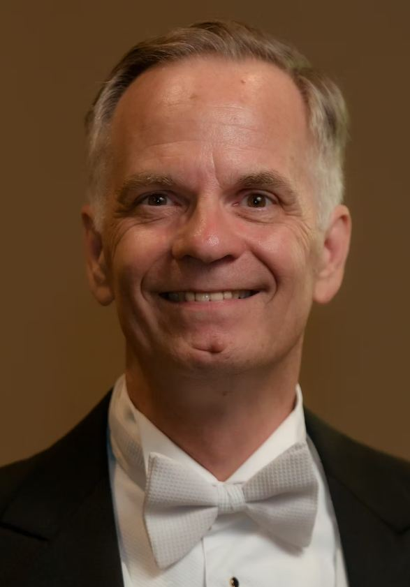

Joseph Stuligross
Artistic Director & Co-Founder · Conductor · Tenor · Professor
American choral conductor, singer, and educator Joseph Stuligross has held conducting posts at Duquesne University, as well as at the Conservatorio di Musica "Giuseppe Tartini" in Trieste, Italy and at the Akademia Muzyczna im. Feliksa Nowowiejskiego in Poland. As a Fulbright Scholar, Dr. Stuligross served as choral conductor and pedagogue at the University of Pécs in Hungary, where he conducted university choral ensembles and lectured on American music and music education.
He has taught graduate and undergraduate conducting majors as well as courses in a variety of music education subjects. A widely respected music educator, Dr. Stuligross has led masterclasses and workshops throughout Europe, most recently completing a highly successful series of workshops for singers and conservatory students at the Istanbul State Conservatory in Turkey — covering topics including "Music and Movement," "Training the Complete Musician," and "Preparing High School Choral Musicians."
Trained as a singer, Dr. Stuligross performed professionally for many years with opera, chamber, and symphonic choral ensembles in the US and Germany. He remains active as a singer with the Mendelssohn Choir of Pittsburgh, the Pittsburgh Camerata, and other ensembles. He studied with renowned choral conductors Robert Fountain, Joseph Flummerfelt, Simon Carrington, Robert Page, William Weinert, and Paul Salamunovich, and has also studied Dalcroze Eurhythmics, advocating the use of physical movement to enhance musical expression.
Dr. Stuligross earned degrees from the College of Wooster, the University of Wisconsin, and Harvard University. In addition to his musical career, he has also distinguished himself as an appellate labor and retirement benefits attorney.

Deb Stuligross
Managing Director & Co-Founder
Deborah Stuligross, Managing Director and Co-Founder of VoiceGivers, also serves the nonprofit community as founder and CEO of StrefaTECH, an organization providing technology and AI advisory services to nonprofit organizations. She is an active volunteer with Tech To The Rescue, President of the Fine Art Miracles Board, Treasurer of the Reading Ready Pittsburgh Board, and active in many other nonprofit organizations.
Her prior career included working as the Director of Corporate Work Study at Holy Family Academy (now Nazareth Prep), a program of Holy Family Institute; Director of IT at Eaton Corporation; and numerous roles at Rockwell Automation and Systems Modeling Corporation.
She is a happy alto in the Bloomsburg Singers.